СТРОИТЕЛЬНЫЕ НОРМЫ И ПРАВИЛА
БЕТОННЫЕ И ЖЕЛЕЗОБЕТОННЫЕ КОНСТРУКЦИИ
ИЗ ПЛОТНОГО СИЛИКАТНОГО БЕТОНА
СНиП 2.03.02-86
ГОСУДАРСТВЕННЫЙ СТРОИТЕЛЬНЫЙ КОМИТЕТ СССР
МОСКВА 1988
РАЗРАБОТАНЫ ВНИИстромом им. П. П. Будникова Минстройматериалов СССР (д-р техн. наук, проф. В. М. Гусаков - руководитель темы; кандидаты техн. наук Е. Л. Розовский, И. A. Нисканен, А. С.Бычков; И. А. Харичев) с участием ЦНИИСК им. Кучеренко Госстроя СССР (кандидаты техн. наук П.Г. Лабозин - руководитель темы и В. А. Камейко; Л. М. Ломова), НИИСК Госстроя СССР (кандидаты техн. наук В.И. Скатынский - руководитель темы, В. А. Критов, Л. Н. Шевелева), НИПИсиликатобетона Минстройматериалов СССР (канд. техн. наук Э. И. Рохумяги - руководитель темы; М. Э. Кангерт, М. М. Планкан), НИИЖБ Госстроя СССР (д-р техн. наук А. С. 3алесов - руководитель темы; канд. техн. наук Л. К. Руллэ). ЦНИИпромзданий Госстроя СССР (И. К. Никитин).
ВНЕСЕНЫ Минстройматериалов СССР.
ПОДГОТОВЛЕНЫ К УТВЕРЖДЕНИЮ Управлением стандартизации и технических норм в строительстве Госстроя СССР (В. М. Скубко).
С введением в действие СНиП 2.03.02-86 «Бетонные и железобетонные конструкции из плотного силикатного бетона» с 1 января 1988 г. утрачивает силу Инструкция по проектированию бетонных и железобетонных конструкций из плотного силикатного батона (СН 165-76).
При пользовании нормативными документами следует учитывать утвержденные изменения строительных норм и правил и государственных стандартов, публикуемые в журнале «Бюллетень строительной техники», «Сборнике изменений к строительным нормам и правилам» Госстроя СССР и в информационном указателе «Государственные стандарты СССР» Госстандарта СССР.
|
Государственный |
Строительные нормы и правила |
СНиП 2.03.02-86 |
|
Бетонные и железобетонные |
Взамен |
Настоящие нормы и правила распространяются на проектирование бетонных и железобетонных конструкций, изготовляемых из плотного силикатного бетона на плотных заполнителях по ГОСТ 25214-82 и предназначенных для работы в условиях систематического воздействия температуры не выше 50 и не ниже минус 70 °С.
Нормы устанавливают требования к проектированию бетонных и железобетонных конструкций, изготовляемых из такого бетона средней плотности (в высушенном до постоянной массы состоянии) 1700 кг/м3 и более в соответствии с указаниями СН 529-80 и применяемых для строительства производственных и вспомогательных зданий и сооружений промышленных и сельскохозяйственных предприятий, жилых и общественных зданий.
Положения данных норм соответствуют СТ СЭВ 384-76.
При проектировании конструкций из указанного бетона, предназначенных для работы в особых условиях эксплуатации (при сейсмических воздействиях, в среде с агрессивной степенью воздействия на бетонные и железобетонные конструкции, в условиях повышенной влажности и т. п.) необходимо соблюдать дополнительные требования, предъявляемые к таким конструкциям соответствующими нормативными документами.
По показателям прочности бетона приняты классы бетона по прочности на сжатие в соответствии с СТ СЭВ 1406-78.
|
Внесены |
Утверждены |
Срок |
1. ОБЩИЕ УКАЗАНИЯ
ОСНОВНЫЕ ПОЛОЖЕНИЯ
1.1. Бетонные и железобетонные конструкции из плотного силикатного бетона следует проектировать в соответствии с основными положениями СНиП 2.03.01-84 и с учетом указаний настоящих норм.
1.2. Конструкции из плотного силикатного бетона следует применять в зависимости от влажностного режима эксплуатации и степени агрессивности среды зданий и сооружений (см. п. 1.3):
в неагрессивных средах или при воздействии агрессивных газов группы А - независимо от влажностного режима эксплуатации конструкций;
при воздействии газовых (кроме газов группы А) или твердых агрессивных сред - при относительной влажности внутреннего воздуха помещений до 75 % или в сухой и нормальной зонах влажности;
при воздействии неагрессивных и агрессивных вод - в безнапорных сооружениях.
1.3. Влажностный режим эксплуатации конструкций характеризуется:
в отапливаемых зданиях - относительной влажностью внутреннего воздуха помещений;
в неотапливаемых зданиях, а также в сооружениях, находящихся на открытом воздухе, - климатическими районами строительства согласно СНиП 2.01.01-82.
Степень агрессивности воздействия газовых и твердых сред на конструкции из плотного силикатного бетона следует определять согласно СНиП 2.03.11-84, а степень агрессивности воздействия жидких сред - по табл. 1 настоящих норм.
1.4. При проектировании конструкций, эксплуатируемых в агрессивных средах, необходимо предусматривать их защиту в соответствии с требованиями СНиП 2.03.11-84, причем приведенные в указанных нормах требования к ширине раскрытия трещин, толщине защитного слоя бетона и плотности бетона учитывать не следует, а степень агрессивного воздействия сред должна определяться согласно указаниям п. 1.3 настоящих норм.
1.5. Защита арматуры от коррозии предусматривается в зависимости от условий эксплуатации конструкций;
при относительной влажности внутреннего воздуха до 60 % или в сухой зоне влажности специальных мер по защите арматуры от коррозии предусматривать не следует;
при относительной влажности внутреннего воздуха свыше 60 до 75% или в нормальной зоне влажности, как правило, необходимо принимать меры к обеспечению сохранности арматуры в бетоне (увеличение марок бетона по плотности на одну ступень по сравнению с приведенными в п. 2.5 настоящих норм или нанесение на поверхность конструкции паронепроницаемого покрытия);
при относительной влажности внутреннего воздуха свыше 75 % или во влажной зоне, а также при наличии агрессивных сред и усиленном воздействии атмосферных осадков и отрицательных температур арматуру необходимо защищать от коррозии латексно-минеральным покрытием. Допускается предусматривать другие виды покрытий после специальной проверки их технологических и защитных свойств и сцепления арматуры с бетоном.
Таблица 1
|
Степень агрессивного воздействия сред на конструкции |
|||
|
неагрессивная |
слабоагрессивная |
средне- и сильноагрессивная |
|
|
1. Общекислотная агрессивность, водородный показатель рН |
Св. 4 |
От 1 до 4 |
До 1 |
|
2.Содержание магнезиальных солей (магнезиальная агрессивность), концентрация ионов Mg2+, г/м3 |
До 300 |
От 300 до 500 |
Св. 500 |
|
3. Содержание свободной (агрессивной углекислоты (углекислотная агрессивность) СО2, г/м3 |
До 20 |
От 20 до 50 |
Св. 50 |
|
4. Щелочная агрессивность, концентрация едких щелочей в расчете на Na+ + К+, кг/м3 |
До 100 |
От 100 до 150 |
Св. 150 |
|
5. Содержание сульфатов (сульфатная агрессивность) в пересчете на ионы SO2-4, кг/м3 |
До 10 |
От 10 до 20 |
Св. 20 |
Примечания: 1. Жидкая среда считается слабоагрессивной, если глубина разрушения бетона за 50 лет не превышает 2 см.
2. Нормы агрессивности жидких сред в настоящей таблице приняты для интервала температур среды от 0 до 25 °С. При температуре среды вне пределов данного интервала заключение об агрессивности вод дается на основе результатов специальных исследований.
3. Проточные и непроточные пресные воды (мягкие и жесткие) по отношению к плотному силикатному бетону являются неагрессивными.
4. При неполном погружении (в условиях капиллярного подсоса воды) или периодическом воздействии растворов едких щелочей или сульфатных растворов с концентрацией сульфат-ионов свыше 600 г/м3 т. е. при возможности накопления в порах бетона солей, оказывающих разрушающее действие на бетон, среда является сильноагрессивной по отношению к плотному силикатному бетону.
5. При содержании в воде веществ, не предусмотренных настоящей таблицей, степень агрессивности воздействия среды следует устанавливать на основе результатов специальных исследований.
1.6. При проектировании конструкций, систематически подвергающихся воздействию атмосферных осадков (плит балконов, лоджий, карнизов, парапетов и т. п.), следует предусматривать конструктивные мероприятия, обеспечивающие постоянный отвод воды с этих конструкций и исключающие затекание воды на нижнюю поверхность.
1.7. В наружных ограждающих конструкциях, на внутренней поверхности которых допускается конденсация водяного пара или внутренние поверхности которых по технологическим условиям производства омываются водой (например, в банях), необходимо предусматривать устройство с внутренней стороны водонепроницаемого слоя согласно требованиям СНиП II-3-79.
ОСНОВНЫЕ РАСЧЕТНЫЕ ТРЕБОВАНИЯ
1.8. При проектировании конструкций из плотного силикатного бетона необходимо соблюдать основные расчетные требования СНиП 2.03.01-84, а при проектировании элементов стен с двух- и многорядной разрезкой - требования СНиП II-22-81.
ДОПОЛНИТЕЛЬНЫЕ ТРЕБОВАНИЯ К ПРОЕКТИРОВАНИЮ ПРЕДВАРИТЕЛЬНО НАПРЯЖЕННЫХ КОНСТРУКЦИЙ
1.9. Предельные значения предварительного напряжения ssp и s¢sp соответственно в напрягаемой арматуре S и S¢¢ следует назначать с учетом допустимых отклонений р значения предварительного напряжения таким образом, чтобы для стержневой и проволочной арматуры выполнялись условия:
ssp + p
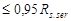 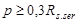
Значение р, МПа, при механическом способе натяжения арматуры принимается равным 0,05ssp, а при электротермическом и электротермомеханическом способах определяется по формуле
р = 30 + 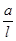
где а - величина, принимаемая равной 360 при неавтоматизированном способе натяжения арматуры и 90 - при автоматизированном;
l - длина натягиваемого стержня (расстояние между наружными гранями упоров), м.
1.10. Значения напряжений scon1 и s¢con1 соответственно в напрягаемой арматуре S и S¢, контролируемые по окончании натяжения на упоры, принимаются равными ssp и s¢sp (см. п. 1.9) за вычетом потерь по поз. 3 и 4 табл. 2 настоящих норм.
Значения напряжений в напрягаемой арматуре S и S¢, контролируемые в месте приложения натяжного усилия при натяжении арматуры на затвердевший бетон, принимаются равными соответственно scon2 и s¢con2 определяемым по формулам (3) и (4) СНиП 2.03.01-84.
1.11. При расчете предварительно напряженных элементов следует учитывать потери предварительного напряжения арматуры.
Таблица 2
|
Факторы, вызывающие потери предварительного напряжения арматуры |
Обозначения |
Значение потерь предварительного напряжения, МПа, при натяжении арматуры |
|
|
на упоры |
на бетон |
||
|
А. Первые потери |
|||
|
1. Релаксация напряжений арматуры: при механическом способе натяжения: |
s1 |
||
|
а) проволочной |
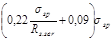 |
- |
|
|
б) стержневой |
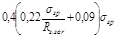 |
- |
|
|
при электротермических и электротермомеханических способах натяжения стержневой арматуры |
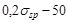 Здесь ssp принимается без учета потерь, МПа. Если вычисленные значения потерь окажутся отрицательными, их следует принимать равными нулю |
- |
|
|
2. Автоклавная обработка изделий |
s2 |
20 |
- |
|
3. Деформация анкеров, расположенных у натяжных устройств |
s3 |
Принимаются по поз. 3 табл. 5 СНиП 2.03.01-84 |
Принимаются по поз. 3 табл.5 СНиП 2.03.01-84 |
|
4. Трение арматуры: |
|||
|
а) о стенки каналов или о поверхность бетона конструкций |
s4 |
- |
Принимаются по поз. 4а табл. 5 СНиП 2.03.01-84 |
|
б) об огибающие приспособления |
s¢4 |
Принимаются по поз. 4б табл. 5 СНиП 2.03.01-84 |
- |
|
5. Деформация стальных форм при неодновременном натяжении арматурных стержней |
s5 |
Принимаются по поз. 5 табл. 5 СНиП 2.03.01-84 |
- |
|
6. Быстронатекающая ползучесть бетона |
s6 |
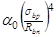 где a0 - коэффициент определяемый по формуле 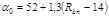 sbp - определяется согласно пп. 1.27 и 1.28 СНиП 2.03.01-84 на уровне центра тяжести площадей сечения продольной арматуры S и S¢ c учетом потерь по поз. 1 - 5 настоящей таблицы; Rbn - принимается по табл. 8 настоящих норм |
- |
|
Б. Вторые потери |
|||
|
7. Релаксация напряжений арматуры |
s7 |
- |
Принимаются по поз. 7 табл. 5 СНиП 2.03.01-84 |
|
8. Усадка бетона (см. п.1.12 настоящих норм) |
s8 |
30 |
30 |
|
9. Ползучесть бетона |
s9 |
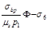 где ms, p1,F - коэффициенты, определяемые в соответствии с указаниями п.1.13 настоящих норм; s6 - потери, принимаемые по поз. 6 настоящей таблицы; sbp - см. поз. 6 настоящей таблицы |
|
|
10. Деформация обжатия стыков между блоками (для конструкций, со стоящих из блоков) |
s10 |
- |
Принимаются no поз. 11 табл. 5 СНиП 2.03.01-84 |
Примечание. Потери предварительного напряжения в напрягаемой арматуре S¢ определяются так же, как и в арматуре S.
При натяжении арматуры на упоры следует учитывать потери:
а) первые - от деформации анкеров, трения арматуры об огибающие приспособления, от релаксации напряжений арматуры, температурного перепада, деформации форм (при натяжении арматуры на формы), автоклавной обработки, быстронатекающей ползучести бетона, проявляющейся в процессе обжатия;
б) вторые - от усадки и ползучести бетона.
При натяжении арматуры на бетон следует учитывать потери:
а) первые - от деформации анкеров, трения арматуры о стенки или о поверхность конструкции;
б) вторые - от релаксации напряжений в арматуре, усадки и ползучести бетона, смятия бетона под витками арматуры, деформации стыков между блоками (для конструкций, состоящих из блоков).
Потери предварительного напряжения арматуры следует определять по табл. 2 настоящих норм. При наличии специальных опытных данных эти потери допускается принимать по результатам опытов.
Суммарную величину потерь при проектировании конструкций необходимо принимать не менее 100 МПа.
1.12. При определении потерь предварительного напряжения от усадки бетона по поз. 8 табл. 2 настоящих норм необходимо соблюдать следующие требования:
а) при заранее известном сроке загружения конструкции
потери умножать на коэффициент 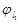
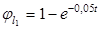
где е - основание натуральных логарифмов;
t - время, отсчитываемое со дня окончания автоклавной обработки;
б) для конструкций, предназначенных для эксплуатации при влажности окружающей воздушной среды ниже 40 %, потери от усадки бетона увеличивать на 25 %.
1.13. Значение функции Ф при определении потерь предварительного напряжения от ползучести бетона (см. поз. 9 табл. 2 настоящих норм) следует вычислять по формуле
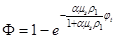
где
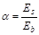
ms - коэффициент армирования сечения напрягаемой арматурой, определяемый по формуле
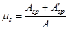
r 1 - коэффициент, определяемый по формуле
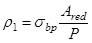
здесь R - усилие обжатия с учетом потерь напряжения по поз. 1-5 табл. 2 настоящих норм;
jt - характеристика ползучести бетона, определяемая по формуле:
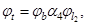
здесь jb - предельное значение характеристики ползучести бетона, определяемое согласно п. 2.13 настоящих норм;
a4 - коэффициент нелинейности, принимаемый по табл. 3 настоящих норм или по формулам:
при 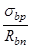
« 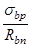
jl2 - коэффициент, учитывающий продолжительность действия напряжений sbp, определяемый по табл. 4 настоящих норм или по формуле
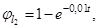
где t - время, сут, от обжатия бетона до загружения или испытания конструкции; если этот срок неизвестен, значение следует принимать при t = 100 сут.
Значения функции Ф могут определяться по табл. 5 настоящих норм в зависимости от величии, jt и произведения amsp1.
1.14. Значения напряжений в бетоне и арматуре, а также усилия предварительного обжатия бетона, вводимые в расчет предварительно напряженных элементов, следует определять согласно указаниям пп. 1.27 и 1.28 СНиП 2.03.01-84, при этом значения потерь предварительного напряжения следует принимать по табл. 2 в соответствии с пп. 1.10-1.13 настоящих норм.
1.15. Сжимающие напряжения в бетоне в стадии предварительного обжатия sbp не должны превышать значений (в долях от передаточной прочности бетона Rbp), указанных в табл. 7 СНиП 2.03.01-84, при замене величины Rbp на величину Rbn, принимаемую по табл. 8 настоящих норм.
Значение sbp определяется согласно п. 1.14 настоящих норм на уровне крайнего сжатого волокна бетона с учетом потерь предварительного напряжения по поз. 1-5 табл. 2 настоящих норм и при коэффициенте точности натяжения арматуры gsp равном единице.
Таблица 3
|
Степень обжатия бетона sbp/Rbn |
£ 0,4 |
0,5 |
0,6 |
0,7 |
0,8 |
0,9 |
1,0 |
|
Коэффициент нелинейности a4 |
0,8 |
0,9 |
1,0 |
1,1 |
1,2 |
1,3 |
1,4 |
Таблица 4
|
Время t, сут, от обжатия бетона до загружения или испытания конструкции |
3 |
7 |
14 |
28 |
60 |
90 |
100 |
|
Коэффициент 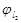 |
0,03 |
0,07 |
0,13 |
0,25 |
0,451 |
0,593 |
0,632 |
Продолжение табл. 4
|
Время t, сут, от обжатия бетона до загружения или испытания конструкции |
120 |
180 |
240 |
300 |
360 |
720 |
|
Коэффициент |
0.699 |
0,835 |
0.909 |
0.950 |
0,973 |
0,999 |
Таблица 5
|
amsr1 |
Функция F при значении jt |
|||||
|
0,4 |
0,8 |
1,2 |
1,6 |
2,0 |
2,4 |
|
|
0 |
0 |
0 |
0 |
0 |
0 |
0 |
|
0,1 |
0,035 |
0,070 |
0,103 |
0,135 |
0,166 |
0,196 |
|
0,2 |
0,065 |
0,125 |
0,131 |
0,234 |
0,284 |
0,330 |
|
0,3 |
0,088 |
0,169 |
0,211 |
0,309 |
0,370 |
0,378 |
|
0,4 |
0,108 |
0,205 |
0,290 |
0,368 |
0,436 |
0,444 |
|
0,5 |
0,124 |
0,234 |
0,330 |
0,413 |
0,486 |
0,550 |
|
0,6 |
0,139 |
0,259 |
0,362 |
0,451 |
0,528 |
0,593 |
|
0,7 |
0,150 |
0,285 |
0,386 |
0,489 |
0,557 |
0,624 |
|
0,8 |
0,163 |
0,300 |
0,413 |
0,509 |
0,589 |
0,657 |
|
0,9 |
0,173 |
0,316 |
0,434 |
0,531 |
0,612 |
0,680 |
|
1,0 |
0,181 |
0,330 |
0,451 |
0,551 |
0,632 |
0,699 |
|
1,1 |
0,189 |
0,342 |
0,467 |
0,567 |
0,650 |
0,716 |
|
1,2 |
0,196 |
0,353 |
0,480 |
0,582 |
0,664 |
0,730 |
|
1,3 |
0,202 |
0,364 |
0,492 |
0,595 |
0,677 |
0,743 |
|
1,4 |
0,208 |
0,372 |
0,503 |
0,607 |
0,690 |
0,753 |
|
1,5 |
0,213 |
0,381 |
0,513 |
0,617 |
0,699 |
0,763 |
|
1,6 |
0,218 |
0,389 |
0,522 |
0,626 |
0,708 |
0,772 |
|
1,7 |
0,223 |
0,396 |
0,530 |
0,636 |
0,716 |
0,779 |
|
1,8 |
0,227 |
0,402 |
0,537 |
0,643 |
0,722 |
0,786 |
Примечание: При промежуточных значениях
величины jt или
произведения 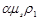
2. МАТЕРИАЛЫ ДЛЯ БЕТОННЫХ И ЖЕЛЕЗОБЕТОННЫХ КОНСТРУКЦИЙ
БЕТОН
2.1. Для бетонных и железобетонных конструкций, проектируемых в соответствии с требованиями настоящих норм, следует предусматривать бетоны следующих классов и марок:
а) классов по прочности на сжатие - В10; В12,5;. В15; В20; В25; В3О; В40; В45;
б) марок по морозостойкости - F25; F35; F50; F75; F100; F150; F200; F300; F400; F500;
в) марок по водонепроницаемости - W2; W 4; W6; W8;
г) марок по средней плотности - D1700; D18000; 01900; D2000.
Примечания: 1. Классы бетона по прочности на сжатие отвечают значению гарантированной прочности бетона, МПа, контролируемой на базовых образцах в остывшем до температуры 20 ± 2 °С состоянии согласно государственным общесоюзным стандартам с обеспеченностью 0,95.
2. Класс бетона по прочности на сжатие В необходимо указывать в проекте во всех случаях.
3. Марку по морозостойкости F следует назначать для конструкций, подвергающихся в увлажненном состоянии действию попеременного замораживания и оттаивания.
4. Марку по водонепроницаемости W следует назначать для конструкций, к которым предъявляются требования непроницаемости.
2.2. Бетон классов В10, В12,5 следует применять только для бетонных и плоских (не стержневых) железобетонных конструкций (за исключением плит перекрытий над санузлами и совмещенной кровли), эксплуатируемых при относительной влажности внутреннего воздуха помещений до 60 % или в сухой зоне влажности.
Конструкции из бетона классов В10 и В12,5 в агрессивных средах, а также в условиях многократно повторяющейся нагрузки применять не допускается.
Для сильнонагруженных сжатых стержневых элементов (например, колонн, воспринимающих крановые нагрузки) класс бетона следует принимать не ниже В25.
2.3. Для предварительно напряженных элементов класс бетона необходимо назначать не ниже указанного в табл. 6 с учетом требований п. 2.16 настоящих норм.
Таблица 6
|
Класс бетона, не ниже |
|
|
1. Проволочная арматура классов: |
|
|
B-II (с анкерами) |
В15 |
|
Вр-II (без анкеров) диаметром проволоки, мм: |
|
|
5 |
В20 |
|
6 и более |
В25 |
|
2. Стержневая арматура (без анкеров) диаметром, мм: |
|
|
от 10 до 18 включ., классов: |
|
|
A-IV |
В15 |
|
A-V |
В20 |
|
A-VI |
В25 |
|
20 и более, классов: |
|
|
A-IV |
В20 |
|
A-V |
В25 |
|
A-VI |
В30 |
Таблица 7
|
Марка бетона, не ниже |
||||||||
|
характеристика режима |
расчетная зимняя температура наружного воздуха, °С |
по морозостойкости |
по водонепроницаемости |
|||||
|
для конструкций (кроме наружных стен отапливаемых зданий) зданий и сооружений класса по степени ответственности |
||||||||
|
I |
II |
III |
I |
II |
III |
|||
|
1. Попеременное замораживание и оттаивание: |
||||||||
|
а) в водонасыщенном состоянии например, конструкции, расположенные в сезоннооттаивающем слое грунта в районах вечной мерзлоты) |
Ниже минус 40 |
F300 |
F200 |
F150 |
W6 |
W4 |
W2 |
|
|
Ниже минус 20 до минус 40 включ. |
F200 |
F150 |
F100 |
W4 |
W2 |
Не нормируется |
||
|
Ниже минус 5 до минус 20 включ. |
F150 |
F100 |
F75 |
W2 |
Не нормируется |
|||
|
Минус 5 и выше |
F100 |
F75 |
F50 |
Не нормируется |
||||
|
б) в условиях эпизодического водонасыщения (например, надземные конструкции, постоянно подвергающиеся атмосферным воздействиям) |
Ниже минус 40 |
F200 |
F150 |
F100 |
W4 |
W2 |
Не нормируется |
|
|
Ниже минус 20 до минус 40 включ. |
F100 |
F75 |
F50 |
W2 |
Не нормируется |
|||
|
Ниже минус 5 до минус 20 включ. |
F75 |
F50 |
F35 |
Не нормируется |
||||
|
Минус 5 и выше |
F50 |
F35 |
F25 |
То же |
||||
|
в) в условиях воздушно-влажностного состояния при отсутствии эпизодического водонасыщения (например, конструкции, постоянно подвергающиеся воздействию окружающего воздуха, защищенные от воздействия атмосферных осадков) |
Ниже минус 40 |
F150 |
F100 |
F75 |
W4 |
W2 |
Не нормируется |
|
|
Ниже минус 20 до минус 40 включ. |
F75 |
F50 |
F35 |
Не нормируется |
||||
|
Ниже минус 5 до минус 20 включ. |
F50 |
F35 |
F25 |
То же |
||||
|
Минус 5 и выше |
F35 |
F25 |
F25 |
« |
||||
|
2. Возможное эпизодическое воздействие температур ниже 0 °С: а) в водонасыщенном состоянии (например, конструкции, находящиеся в грунте или под водой |
Ниже минус 40 |
F150 |
F100 |
F75 |
He нормируется |
|||
|
Ниже минус 20 до минус 40 включ. |
F75 |
F50 |
F35 |
To же |
||||
|
Ниже минус 5 до минус 20 включ. |
F50 |
F35 |
F25 |
« |
||||
|
Минус 5 и выше |
F35 |
F25 |
F25 |
« |
||||
|
б) в условиях воздушно влажностного состояния (например, внутренние конструкции отапливаемых зданий в период строительства и монтажа) |
Ниже минус 40 |
F75 |
F50 |
F35 |
He нормируется |
|||
|
Ниже минус 20 до минус 40 включ. |
F35 |
F25 |
F25 |
To же |
||||
|
Ниже минус 5 до минус 20 включ. |
F35 |
F25 |
F25 |
« |
||||
|
Минус 5 и выше |
F25 |
F25 |
F25 |
« |
||||
Примечания: 1. Расчетные зимние температуры наружного воздуха принимаются согласно указаниям п. 1.8 СНиП 2.03.01-84.
2. Проектные марки бетона по водонепроницаемости для конструкций сооружений водоснабжения и ирригации следует принимать не ниже W4, а проектные марки бетона по морозостойкости - по указаниям соответствующих строительных норм и государственных стандартов как для тяжелого бетона.
3. Проектная марка бетона по водонепроницаемости для конструкций, эксплуатируемых в агрессивных средах, должна быть не ниже W6.
Для конструкций, рассчитываемых на воздействие многократно повторяющейся нагрузки, минимальные значения класса бетона, приведенные в табл. 6, следует увеличивать на одну ступень (5 МПа). Проволочную арматуру классов В-II, Вр-II в этих условиях, а также для предварительно напряженных конструкций пролетом более 12 м допускается применять только после специального экспериментального обоснования.
2.4. Марки бетона по морозостойкости и водонепроницаемости бетонных и железобетонных конструкций в зависимости от режима их эксплуатации и значений расчетных зимних температур наружного воздуха в районе строительства следует принимать:
для конструкций зданий и сооружений (кроме наружных стен отапливаемых зданий) - не ниже указанных в табл. 7 настоящих норм;
для наружных стен отапливаемых зданий - не ниже указанных в табл. 10 СНиП 2.03.01-84 для тяжелого бетона.
2.5. Марки по средней плотности бетонных и железобетонных конструкций в зависимости от режима их эксплуатации должны быть не ниже:
для внутренних конструкций зданий и сооружений, эксплуатируемых при относительной влажности внутреннего воздуха до 60 % - D1700;
для внутренних конструкций зданий и сооружений, эксплуатируемых при относительной влажности внутреннего воздуха свыше 60 до 75 % или в нормальной зоне влажности, а также для перекрытий санузлов жилых зданий - D1800;
для наружных ограждающих конструкций и стен подвалов зданий, за исключением эксплуатируемых при относительной влажности внутреннего воздуха свыше 75 % или во влажной зоне (см. п. 1.3 настоящих норм) - D1800:
для всех конструкций, эксплуатируемых при относительной влажности внутреннего воздуха свыше 75 % или во влажной зоне, а также для перекрытий санузлов общественных зданий, для плит балконов и лоджий, карнизов, поясков и других выступающих деталей фасадов - D1900;
для конструкций, эксплуатируемых в агрессивных средах - D1900.
2.6. Для конструкций, эксплуатируемых в агрессивных средах, применять бетон на полностью гидратированном вяжущем, как правило, не следует.
2.7. Замоноличивание стыков конструкций следует предусматривать цементным бетоном, классы которого должны назначаться согласно требованиям пп. 2.8 и 2.10 СНиП 2.03.01-84.
НОРМАТИВНЫЕ И РАСЧЕТНЫЕ ХАРАКТЕРИСТИКИ БЕТОНА
2.8. Нормативными сопротивлениями бетона являются сопротивление осевому сжатию призм (призменная прочность) Rbn и сопротивление осевому растяжению Rbtn.
Нормативное сопротивление Rbn принято равным
Rbn = (0,85 - 0,00135 В) В, (10)
но не менее 0,8 В, где В - в МПа.
Нормативное сопротивление Rbtn принято равным
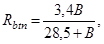
где B - в МПа.
Нормативные сопротивления бетона Rbn с округлением в зависимости от класса бетона по прочности на сжатие приведены в табл. 8.
2.9. Расчетные сопротивления бетона для предельных состояний первой и второй групп определяются путем деления нормативных сопротивлений на соответствующие коэффициенты надежности по бетону при сжатии gbc или при растяжении gbt, принимаемые по табл. 9.
Значения расчетных сопротивлений бетона в зависимости от класса бетона по прочности на сжатие для предельных состояний первой группы Rb и Rbt, приведены (с округлением) в табл. 10, для предельных состояний второй группы Rb.ser и Rbt.ser - в табл. 8.
2.10. Расчетные сопротивления бетона для предельных состояний первой группы Rb, и Rbt, приведенные в табл. 10, следует снижать (или повышать) путем умножения на коэффициенты условий работы бетона ¡bc, учитывающие особенности свойств бетона, длительность действия нагрузки и ее многократную повторяемость, условия и стадию работы конструкций, способ их изготовления, размеры сечения и т. п. Значения коэффициентов ¡bi приведены в табл. 11.
Таблица 8
|
Нормативные сопротивления бетона Rbn, Rbtn и расчетные сопротивления бетона для предельных состояний второй группы Rb/ser и Rbt.ser при классе бетона по прочности на сжатие |
|||||||||
|
В10 |
В12,5 |
В15 |
В20 |
В25 |
В30 |
В35 |
В40 |
В45 |
|
|
Сжатие осевое (призменная прочность) Rbn и Rb.ser |
8,4 85,7 |
10,4 106 |
12,4 127 |
16,5 168 |
20,4 208 |
24,3 248 |
28,1 286 |
32,0 326 |
35,5 362 |
|
Растяжение осевое Rbtn и Rbt.ser |
0,9 9,2 |
1,05 10,7 |
1,15 11,7 |
1,40 14,3 |
1,60 16,3 |
1,75 17,8 |
1,90 19,4 |
2,0 20,4 |
2,10 21,4 |
Примечание: Над чертой указаны значения в МПа, под чертой - в кгс/см2.
Таблица 9
|
Коэффициенты надежности по бетону |
||
|
при сжатии gbc |
при растяжении gbt |
|
|
Первая |
1,35 |
1,55 |
|
Вторая |
1,00 |
1,00 |
2.11. Расчетные сопротивления при растяжении Rbt.ser предельных состояний второй группы при расчете по деформациям следует увеличивать путем умножения на коэффициент условий работы бетона gbt1 = 1,4, а при расчете по образованию нормальных и наклонных трещин от многократно повторных нагрузок, а также при расчете по образованию наклонных трещин от любых нагрузок - уменьшать путем умножения на коэффициент условий работы бетона соответственно gb1, и gb4, значения которых приведены в табл. 11 и 12.
2.12. Значения начального модуля упругости бетона Eb, при сжатии и растяжении принимаются по табл. 13.
Для незащищенных от солнечной радиации конструкций, предназначенных для эксплуатации в климатическом подрайоне IVA согласно СНиП 2.01.01-82, значения Еb, указанные в табл. 13, следует умножать на коэффициент 0,85.
Для бетона, подвергающегося попеременному замораживанию и оттаиванию, значения Еb, указанные в табл. 13, следует умножать на коэффициент условий работы бетона gb6, принимаемый по табл. 17 СНиП 2.03.01.84.
При наличии данных о составе бетона, условиях изготовления и т. д. допускается принимать другие значения Еb, согласованные в установленном порядке.
2.13. Предельные значения характеристики ползучести бетона jb следует определять в зависимости от влажностного режима эксплуатации конструкций по формуле
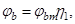
где jьт - предельные значения характеристики ползучести бетона при влажности окружающей воздушной среды 40-75 %, принимаемые по табл. 14 настоящих норм;
h1 - коэффициент, принимаемый равным при относительной влажности внутреннего воздуха, %:
свыше 75 или во влажной зоне 1,1
от 40 до 75 или в зоне нормальной влажности 1,0
до 40 или в сухой зоне 0,9
2.14. Коэффициент линейной температурной деформации бетона abt при изменении температур от минус 50 до плюс 50 °С следует принимать равным 1×10-5 °С-1.
При наличии данных о минералогическом составе заполнителей, составе и водонасыщении бетона и т. п. допускается принимать другие значения abt, обоснованные в установленном порядке.
Для расчетной температуры ниже минус 50 °С величину abt следует принимать по экспериментальным данным.
2.15. Начальный коэффициент поперечной деформации бетона (коэффициент Пуассона) n следует принимать равным 0,2, а модуль сдвига бетона G - равным 0,4 соответствующих значений Еb, указанных в табл. 13.
Таблица 10
|
Расчетные сопротивления бетона для предельных состояний первой группы Rb и Rbt при классе бетона по прочности на сжатие |
|||||||||
|
В10 |
В12,5 |
В15 |
В20 |
В25 |
В30 |
В35 |
В40 |
В45 |
|
|
Сжатие осевое (призменная прочность) Rb |
6,2 63 |
7,7 84 |
9,2 94 |
12,2 124 |
15,1 154 |
18,0 184 |
20,8 212 |
23,7 242 |
26,3 268 |
|
Растяжение осевое Rbt |
0,58 5,9 |
0,68 6,9 |
0,74 7,5 |
0,90 9,2 |
1,03 10,5 |
1,13 11,5 |
1,23 12,5 |
1,29 13,1 |
1,35 13,8 |
Примечание. Над чертой указаны значения в МПа, под чертой - в кгс/см2.
Таблица 11
|
Факторы, обусловливающие введение коэффициентов условий работы бетона |
Коэффициенты условий работы бетона |
|
|
условное обозначение |
числовое значение |
|
|
gb1 |
См. табл. 12 |
|
|
а) при учете постоянных, длительных и кратковременных нагрузок, кроме нагрузок непродолжительного действия, суммарная длительность которых за период эксплуатации мала (например, крановые нагрузки; нагрузки от транспортных средств; ветровые нагрузки; нагрузки, возникающие при изготовлении, транспортировании и возведении и т.п.), а также при учете особых нагрузок, вызванных деформациями просадочных, набухающих, вечномерзлых и подобных грунтов; |
gb2 |
0,85 |
|
б) при учете в рассматриваемом сочетании кратковременных нагрузок непродолжительного действия или особых нагрузок, не указанных в поз. 2а |
1,00 |
|
|
3. Бетонирование в вертикальном положении при высоте слоя бетонирования свыше 1,5 м |
gb3 |
0,85 |
|
4. Влияние двухосного сложного напряженного состояния «сжатие - растяжение» на прочность бетона |
gb4 |
См. п.4.11 СНиП 2.03.01-84 |
|
gb6 |
См. табл. 17 СНиП 2.03.01-84 |
|
|
6. Эксплуатация не защищенных от солнечной радиации конструкций в климатическом подрайоне IVA согласно СНиП 2.01.01-82 |
gb7 |
0,85 |
|
gb9 |
0,90 |
|
|
gb12 |
1,15 |
|
|
9. Сжатые элементы с содержанием арматуры S менее 0,3 % площади сечения бетона при эксцентриситете продольного усилия е0 > 0,3h |
gb13 |
0,90 |
|
10. Простенки площадью сечения менее 0,1 м2 в стеновых панелях |
gb14 |
0,80 |
|
11. Особенности упругопластических свойств бетона классов: В30, В35 |
gb15 |
0,95 |
|
В40 |
0,90 |
|
|
В45 |
0,85 |
|
|
12. Неравномерность распределения прочности бетона всех классов по высоте сечения конструкций |
gb16 |
0,85 |
Примечания. Коэффициенты условий работы бетона по поз. 1, 2, 5, 6, 7 должны учитываться при определении расчетных сопротивлений бетона Rb, и Rbt по поз. 4 - при определении Rbt,ser а по остальным позициям - только при определении Rb.
2. Для конструкций, находящихся под действием многократно повторяющейся нагрузки, коэффициент gb2 учитывается при расчете по прочности, а gb1 - при расчете на выносливость и по образованию трещин.
3. При расчете конструкций в стадии предварительного обжатия коэффициент gb2 принимается равным единице.
4. Коэффициенты условий работы бетона вводятся независимо друг от друга, но при этом их произведение должно быть не менее 0,45.
Таблица 12
|
0-0,1 |
0,2 |
0,3 |
0,4 |
0,5 |
0,6 |
0,7 |
|
|
Коэффициент gb1 |
0,50 |
0,55 |
0,60 |
0,70 |
0,75 |
0,80 |
0,85 |
В табл.
12: 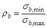
где 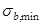 - соответственно наименьшее и
наибольшее напряжения в бетоне в пределах цикла изменения нагрузки,
определяемые согласно п. 3.47 СНиП 2.03.01-84 с учетом
требований п.
3.14 настоящих норм.
- соответственно наименьшее и
наибольшее напряжения в бетоне в пределах цикла изменения нагрузки,
определяемые согласно п. 3.47 СНиП 2.03.01-84 с учетом
требований п.
3.14 настоящих норм.
Таблица 13
|
Начальные модули упругости при сжатии и растяжении Eb×10-3 при классе бетона по прочности на сжатие |
|||||||||
|
В10 |
B12,5 |
B15 |
B20 |
B25 |
В30 |
В35 |
В40 |
В45 |
|
|
На известково-песчаном вяжущем |
9,9 101 |
11,9 121 |
13,8 141 |
16,5 168 |
18,8 192 |
20,7 211 |
22,0 224 |
23,0 235 |
23,6 241 |
|
На известково-шлаковом вяжущем |
11,8 120 |
14,2 145 |
16,5 168 |
19,8 202 |
22,5 229 |
24,8 253 |
26,4 269 |
27,6 281 |
28,3 288 |
Примечания: 1. Над чертой указаны значения Eb×10-3 в МПа, под чертой - в кгс/см2.
2. При расчете слоистых конструкций по предельным состояниям первой группы в тех случаях, когда в расчете учитываются слои не только из плотного силикатного бетона, но и из других материалов, приведенные в данной таблице значения модуля упругости плотного силикатного бетона следует увеличивать или уменьшать на 30 % исходя из отклонения в сторону, неблагоприятную для расчета.
Таблица 14
|
Предельные значения характеристики ползучести jbm при классе бетона по прочности на сжатие |
|||||||||
|
В10 |
В12,5 |
B15 |
B20 |
B25 |
B30 |
B35 |
В40 |
B45 |
|
|
На известково-песчаном вяжущем |
2,00 |
2,00 |
1,75 |
1,50 |
1,50 |
1,25 |
1,25 |
1,00 |
1,00 |
Примечания: 1. Для плотного силикатного бетона на известково-шлаковом вяжущем предельное значение характеристики ползучести jbm следует принимать для рассмотренных классов бетона равным единице.
2. При наличии данных о составе бетона в условиях изготовления конструкций допускается принимать другие значения jb, согласованные в установленном порядке.
3. Влажность воздуха окружающей среды следует определять согласно указаниям п. 1.8 СНиП 2.03.01-84.
АРМАТУРА
2.16. Для армирования конструкций, а также для закладных изделий следует принимать арматуру и сталь согласно указаниям пп. 2.17-2.24 СНиП 2.03.01-84.
В качестве напрягаемой арматуры не допускается применять высокопрочную холоднотянутую арматурную проволоку классов В-II и Вр-II диаметром 4 мм и менее, а также арматурные канаты.
2.17. Нормативные и расчетные характеристики арматуры следует принимать согласно указаниям пп. 2.25-2.30 СНиП 2.03.01-84 с учетом требований пп. 2.18-2.19 настоящих норм.
2.18. Коэффициент условий работы арматуры gs3, принимаемый по табл. 25 СНиП 2.03.01-84,
следует умножать на коэффициент, равный 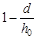
2.19. Длину зоны передачи напряжений lр для напрягаемой арматуры без анкеров следует определять по формуле (11) СНиП 2.03.01-84, принимая значение Rbp равным Rbn по табл. 8 настоящих норм, а потери предварительного напряжения арматуры при определении ssp по поз. 1-5 табл. 2 настоящих норм.
3. РАСЧЕТ ЭЛЕМЕНТОВ БЕТОННЫХ И ЖЕЛЕЗОБЕТОННЫХ КОНСТРУКЦИЙ ПО ПРЕДЕЛЬНЫМ СОСТОЯНИЯМ ПЕРВОЙ ГРУППЫ
РАСЧЕТ БЕТОННЫХ ЭЛЕМЕНТОВ ПО ПРОЧНОСТИ
3.1. Расчет бетонных и конструктивно армированных элементов по прочности следует производить согласно указаниям пп. 3.1-3.8 СНиП 2.03.01-84, принимая:
расчетные характеристики материалов согласно разд. 2 настоящих норм;
коэффициент a в формулах (12), (14), (15) и (23) СНиП 2.03.01-84 равным единице;
коэффициент h по формуле (19) СНиП 2.03.01-84 с учетом указаний п. 3.3 настоящих норм.
3.2. Расчет бетонных и конструктивно армированных элементов стен с двух- и многорядной разрезкой следует производить согласно требованиям СНиП 11-22-81 с учетом указаний настоящих норм.
3.3. Значения коэффициента h, учитывающего влияние прогиба внецентренно сжатого элемента на величину эксцентриситета продольного усилия e0, следует определять по формуле (19) СНиП 2.03.01-84, принимая условную критическую силу равной:
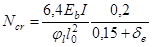
где jl - коэффициент, учитывающий влияние длительного действия нагрузки на жесткость элемента в предельном состоянии, определяемый по формуле
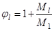
здесь M1 и Ml - моменты относительно растянутой или наименее сжатой грани сечения соответственно от всех нагрузок (постоянных, длительных и кратковременных) и нагрузок, при действии которых учитывается коэффициент условий работы бетона gb2 (см. поз. 2а табл. 11 настоящих норм);
de - коэффициент, принимаемый равным e0/h, но не менее
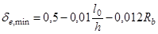
и не менее величины 0,01,
где Rb - в МПа, принимается с учетом коэффициентов условий работы gb15 и gb16.
РАСЧЕТ ЖЕЛЕЗОБЕТОННЫХ ЭЛЕМЕНТОВ ПО ПРОЧНОСТИ
3.4. Расчет железобетонных элементов по прочности следует производить согласно требованиям пп. 3.9-3.46 СНиП 2.03.01-84 с учетом указаний пп. 3.5-3.12 настоящих норм.
3.5. Расчетные характеристики материалов следует принимать согласно указаниям разд. 2 настоящих норм, а величину предварительного напряжения арматуры - согласно указаниям разд. 1 настоящих норм.
Расчет по прочности сечений, нормальных к продольной оси элемента
3.6. Расчет сечений, нормальных к продольной оси элемента, когда внешняя сила действует в плоскости симметрии сечения и арматура сосредоточена у граней элемента, перпендикулярных к указанной плоскости, следует производить согласно пп. 3.10-3.27 СНиП 2.03.01-84 с учетом указаний пп. 3.7-3.9 настоящих норм.
Расчет нормальных сечений, не оговоренных в настоящем пункте, следует производить по формулам общего случая расчета нормальных сечений согласно указаниям п. 3.10 настоящих норм.
3.7. Граничное значение относительной высоты сжатой зоны бетона xR, при котором предельное состояние элементов наступает одновременно с достижением в растянутой арматуре напряжения, равного расчетному сопротивлению Rs. следует определять по формуле
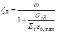
где w - характеристика сжатой зоны бетона, определяемая согласно указаниям п. 3.8 настоящих норм;
ssR - напряжение в арматуре, МПа, принимаемое согласно указаниям п. 3.12 СНиП 2.03.01-84;
eb,max - максимальная краевая относительная деформация в сжатой зоне бетона, принимаемая равной при учете:
всех нагрузок - 3,5×10-3;
нагрузок, при действии которых учитывается коэффициент условий работы бетона gb2 < 1,0 (см. поз. 2а табл. 11) - 4,5×10-3.
3.8. Характеристику сжатой зоны бетона w следует определять по формуле
w = 1 - 0,014Rb (17)
и принимать не более 0,85 (здесь Rb - в МПа).
В случае если в расчете внецентренно сжатых элементов сплошного сечения учитывается косвенное армирование, величину w в формулах (16), (22), (23), (25) настоящих норм следует определять по формуле
w = 1 - 0,014Rb + d2 (18)
и принимать не более 0,9,
где Rb - в МПа;
d2 - коэффициент, определяемый согласно указаниям п. 3.22 СНиП 2.03.01-84.
3.9. При определении коэффициента h для сжатых элементов, имеющих гибкость l/i > 14, значение условной критической силы следует определять по формуле
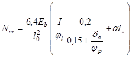
где de и jl - коэффициенты, определяемые согласно указаниям п. 3.3 настоящих норм;
jp - коэффициент, учитывающий влияние предварительного напряжения на жесткость элемента, определяемый согласно п. 3.24 СНиП 2.03.01-84.
3.10. Расчет элементов по общему случаю (при любых сечениях, внешних усилиях и любом армировании) (черт. 1) следует производить из условия
M £ ± (RbSb - SssiSsi), (20)
при этом знак «плюс» перед скобкой принимается для внецентренного сжатия и изгиба, знак «минус» - для растяжения.
В формуле (20):
М - в изгибаемых элементах - проекция момента внешних сил на плоскость, перпендикулярную прямой, ограничивающей сжатую зону сечения;
во внецентренно сжатых и растянутых элементах - момент продольной силы N относительно оси, параллельной прямой, ограничивающей сжатую зону и проходящей:
во внецентренно сжатых элементах - через центр тяжести сечения наиболее растянутого или наименее сжатого стержня продольной арматуры;
во внецентренно растянутых элементах - через точку сжатой зоны, наиболее удаленную от указанной прямой;
Sb - статический момент площади сечения сжатой зоны бетона относительно соответствующей из указанных осей, при этом в изгибаемых элементах положение оси принимается таким, как во внецентренно сжатых;
Ssi - статический момент площади сечения i-го стержня продольной арматуры относительно соответствующей из указанных осей;
ssi - напряжения в i-м стержне продольной арматуры, определяемые согласно указаниям настоящего пункта.
Высота сжатой зоны х и напряжение ssi определяются из совместного решения уравнений:
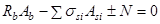
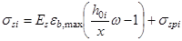
при x £ wh или уравнения (21) и уравнения
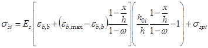
при wh £ x £ h.
В уравнении (21) знак «минус» перед N принимается для внецентренно сжатых элементов, знак «плюс» - для внецентренно растянутых.
При определении положения границы сжатой зоны при косом изгибе следует учитывать положения, приведенные в п. 3.28 СНиП 2.03.01-84.
Если значение ssi, полученное по формуле (22) для арматуры классов A-IV, A-V, A-VI, В-II, Вр-II, превышает bRsi то напряжение ssi следует определять по формуле
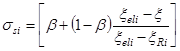
В случае, когда найденное по формуле (24) напряжение в арматуре превышает Rsi без учета коэффициента gs6, в условия (20) и (21) подставляется значение ssi равное Rsi с учетом соответствующих коэффициентов условий работы, в том числе gs6 (см. п. 3.13 СНиП 2.03.01.84).
Черт. 1. Схема усилий и эпюра напряжений в сечении, нормальном к продольной оси железобетонного элемента, при расчете его по прочности
I-I - плоскость, параллельная плоскости действия изгибающего момента, или плоскость, проходящая через точки приложения нормальной силы и равнодействующих внутренних сжимающих и растягивающих усилий; 1 - точка приложения равнодействующей усилий в сжатой арматуре и в бетоне сжатой зоны; 2 - точка приложения равнодействующей усилий в растянутой арматуре
Напряжение ssi вводится в расчетные формулы со своим знаком, получаемым при расчете по формулам (22) - (24). при этом необходимо соблюдать следующие условия:
во всех случаях Rsi ³ ssi ³ -Rsci;
для предварительно напряженных элементов ssi ³ ssci, здесь ssci - напряжение в арматуре, равное предварительному напряжению sspi, уменьшенному на величину ssc,u (см. пп. 3.12 и 3.22 СНиП 2.03.01-84).
В формулах (21) - (24):
Asi - площадь сечения i-го стержня продольной арматуры;
sspi - предварительное напряжение в i-м стержне продольной арматуры, принимаемое при коэффициенте gsp, назначаемом в зависимости от расположения стержня;
eb,max - относительная деформация, принимаемая в соответствии с п. 3.7 настоящих норм;
eb,b - относительная деформация сжатия по всему сечению при х = h, принимаемая равной при учете:
всех нагрузок -2×10-3;
нагрузок, при действии которых учитывается коэффициент условий работы бетона gb2 < 1 (см. поз. 2а табл. 11 настоящих норм) - 2,5×10-3;
h0i - расстояние от оси, проходящей через центр тяжести сечения рассматриваемого i-го стержня арматуры и параллельной прямой, ограничивающей сжатую зону, до наиболее удаленной точки сжатой зоны (см. черт. 1);
w - характеристика, определяемая согласно указаниям п. 3.8 настоящих норм;
xi -
относительная высота сжатой зоны бетона, равная 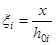
xRi, xeli - относительная высота сжатой зоны, отвечающая достижению в рассматриваемом стержне напряжений, соответственно равных Rsi и bRsi. Значения xRi и xeli определяются по формуле
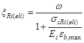
здесь sRi(eli) - напряжения в арматуре, МПа, определяемые согласно указаниям п. 3.28 СНиП 2.03.01-84;
b - коэффициент, принимаемый по п. 3.28 СНиП 2.03.01-84.
В формулах (70) и (71) СНиП 2.03.01-84 величина sspi принимается с учетом потерь, приведенных в поз. 3-5 табл. 2 настоящих норм.
Расчет сечений, наклонных к продольной оси элемента
3.11. При расчете сечений, наклонных к продольной оси элемента, следует принимать следующие значения коэффициентов, входящих в расчетные формулы пп. 3.30 - 3.35 СНиП 2.03.01-84:
b = 0,01; jb2 = 1,80; jb3 = 0,55; jb4 = 1,35;
кроме того, значение коэффициента 0,3 в формуле (72) СНиП 2.03.01-84 следует заменить на 0,25, а значение коэффициента 5 в формуле (73) на 2,5.
Формулы для определения всех других коэффициентов следует принимать по пп. 3.30 - 3.35 СНиП 2.03.01-84.
3.12. Расчет железобетонных коротких консолей колонн на действие поперечной силы следует производить согласно требованиям пп. 3.34 и 5.30 СНиП 2.03.01-84. При этом: в правой части условия (85) следует принимать коэффициент 0,5 вместо 0,8; в выражении, которое должно быть не более правой части условия (85), принимается коэффициент 2,5 вместо 3,5; в формуле (87) коэффициент при а принимается 2,5 вместо 5.
Расчет железобетонных элементов на местное действие нагрузки
3.13. Расчет железобетонных элементов на местное действие нагрузки следует производить согласно требованиям пп. 3.39 - 3.46 СНиП 2.03.01-84 как для конструкций из мелкозернистого бетона.
Расчет железобетонных элементов на выносливость
3.14. Расчет железобетонных элементов на выносливость следует производить согласно указаниям пп. 3.47 - 3.49 СНиП 2.03.01-84, принимая:
коэффициент условий работы бетона gb1 - по табл. 12 настоящих норм;
коэффициенты условий работы арматуры gs3 и gs4 - соответственно по таблицам 25 и 26 СНиП 2.03.01-84 с учетом требований п. 2.18 настоящих норм;
коэффициент приведения арматуры к бетону а - равным 40, 33, 28, 25, 21, 19, 17 соответственно для классов бетона В15, В20, B25, В30, В35, В40, В45.
4. РАСЧЕТ ЭЛЕМЕНТОВ ЖЕЛЕЗОБЕТОННЫХ КОНСТРУКЦИЙ ПО ПРЕДЕЛЬНЫМ СОСТОЯНИЯМ ВТОРОЙ ГРУППЫ
РАСЧЕТ ЖЕЛЕЗОБЕТОННЫХ ЭЛЕМЕНТОВ ПО ОБРАЗОВАНИЮ ТРЕЩИН
4.1. Расчет железобетонных элементов по образованию трещин следует производить в соответствии с указаниями пп. 4.1-4.12 СНиП 2.03.01-84, принимая:
расчетные характеристики материалов согласно разд. 2 настоящих норм;
длину зоны передачи напряжений для напрягаемой арматуры без анкеров, указанную в пп. 4.3 и 4.11 СНиП 2.03.01-84, - согласно п. 2.19 настоящих норм;
значение sbt в формуле (140) СНиП 2.03.01-84 - с учетом указаний п. 3.14 настоящих норм;
коэффициент условий работы бетона gbi - по табл. 11 настоящих норм;
коэффициент а в формуле (142) СНиП 2.03.01-84 равным 0,02.
РАСЧЕТ ЖЕЛЕЗОБЕТОННЫХ ЭЛЕМЕНТОВ ПО РАСКРЫТИЮ ТРЕЩИН
Расчет по раскрытию трещин, нормальных к продольной оси элемента
4.2. Ширину раскрытия трещин, нормальных к продольной оси элемента аcrс, мм, на уровне центра тяжести растянутой арматуры следует определять по формуле
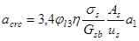
где jl3 - коэффициент, принимаемый равным при учете:
кратковременных нагрузок и непродолжительного действия постоянных и длительных нагрузок - 1,0;
многократно повторяющейся нагрузки, а также продолжительного действия постоянных и длительных нагрузок - 1,5;
h - коэффициент, принимаемый согласно указаниям п. 4.14 СНиП 2.03.01-84;
ss - напряжение на уровне центра тяжести арматуры S или (при наличии предварительного напряжения) приращение напряжений от действия внешней нагрузки, определяемое согласно указаниям п. 4.3 настоящих норм;
Gsb - модуль деформации смещения арматуры относительно бетона на участках между трещинами, принимаемый равным для бетона:
на известково-песчаном вяжущем 0,67Eb
на известково-шлаковом вяжущем 0,62Eb
us - периметр сечения растянутой арматуры;
а1 - коэффициент, определяемый: при двузначной эпюре напряжений в сечении элемента по формуле
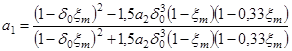
при однозначной эпюре напряжений в сечении элемента по формуле
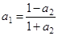
значение a1 принимается не менее 0,4.
В формулах (27) и (28):
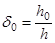
xm - относительная высота сжатой зоны элемента с усредненными деформациями в сжатой зоне и растянутой арматуре, определяемая согласно п. 4.18;
а2 - коэффициент, принимаемый равным
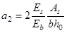
При расположении растянутой арматуры в несколько рядов по высоте растянутой зоны ширина раскрытия трещин на уровне стержней, наиболее удаленных от нейтральной линии, вычисляется по формуле (26) с умножением на коэффициент a3, определяемый по формуле
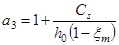
где Сs - расстояние от центра тяжести площади сечения всей растянутой арматуры до центра тяжести ряда стержней, наиболее удаленного от нейтральной линии.
Ширина непродолжительного раскрытия трещин определяется:
для элементов 2-й категории трещиностойкости от непродолжительного действия полной нагрузки (постоянной, длительной, кратковременной) - по формуле (26);
для элементов 3-й категории трещиностойкости- по формуле
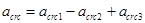
где 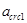
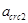
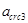
Значения , и определяются по формуле (26) настоящих норм. Входящие в нее величины ym и еs,tot вычисляют по формулам (42) и (55) при значениях wpl определяемых по формулам (37) и (38), и qm - по табл. 15, причем wpl и qm находят при вычислении:
и - от действия полной нагрузки;
- действия постоянной и длительной нагрузок.
Ширина продолжительного раскрытия трещин для элементов, к трещиностойкости которых предъявляются требования 3-й категории, определяются от продолжительного действия постоянных и длительных нагрузок.
На участках элементов, имеющих начальные трещины в сжатой зоне, ширину раскрытия трещин, вычисленную по формуле (31), следует увеличивать на 15 %.
4.3. Напряжения (или их приращения) следует определять по формулам:
для центрально растянутых элементов
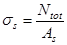
для изгибаемых, а также внецентренно растянутых при e0,tot ³ 0,8h0 и внецентренно сжатых элементов
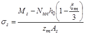
для внецентренно растянутых элементов при e0,tot < 0,8h0
В формулах (32) - (34):
Ntot и Ms - соответственно равнодействующая продольных сил и заменяющий момент, определяемые согласно требованиям п. 4.16; при определении значения Мs эксцентриситет продольных усилий относительно оси, проходящей через центр тяжести растянутой арматуры, следует считать положительным, если он направлен в сторону сжатой (менее растянутой) зоны сечения;
xm - относительная высота сжатой зоны (см. п. 4.2);
zm - величина, характеризующая положение внутренних усилий в сечении и определяемая согласно требованиям п. 4.19;
zs - расстояние между центрами тяжести растянутой и сжатой арматуры, равное h0 - a;
e0,tot - эксцентриситет равнодействующей продольной силы N и усилия предварительного обжатия P относительно центра тяжести приведенного сечения.
4.4. Глубину начальных трещин в сжатой зоне hcrc, образующихся при предварительном обжатии, транспортировании или монтаже элементов, следует определять по формуле
. (35)
Значения xm следует определять по формулам (53) - (56). Значение hcrc не должно превышать 0,5h.
Расчет по раскрытию трещин, наклонных к продольной оси элемента
4.5. Ширину раскрытия трещин, наклонных к продольной оси элемента, в месте пересечения поперечной арматурой наклонной трещины следует определять согласно указаниям п. 4.17 СНиП 2.03.01-84, принимая усилие обжатия Р с учетом потерь по табл. 2 настоящих норм и значения jl = jl3, указанных в п. 4.2 настоящих норм.
РАСЧЕТ ЖЕЛЕЗОБЕТОННЫХ ЭЛЕМЕНТОВ ПО ЗАКРЫТИЮ ТРЕЩИН
4.6. Расчет железобетонных элементов по закрытию (зажатию) трещин следует производить согласно указаниям пп. 4.18, 4.19 и 4.21 СНиП 2.03.01-84, принимая:
расчетные характеристики материалов согласно разд. 2 настоящих норм;
значения ssp и Р с учетом потерь - по табл. 2 настоящих норм;
значение ss - по формулам (32)-(34) настоящих норм;
главные напряжения в бетоне на уровне центра тяжести приведенного сечения - по п. 4.11 СНиП 2.03.01-84 с учетом указаний п. 4.1 настоящих норм.
Для участков элементов, имеющих начальные трещины в сжатой зоне, значение ssp, приведенное в формуле (154) СНиП 2.03.01-84, должно быть снижено на 15 %.
РАСЧЕТ ЖЕЛЕЗОБЕТОННЫХ ЭЛЕМЕНТОВ ПО ДЕФОРМАЦИЯМ
4.7. Деформации (прогибы, углы поворота) элементов железобетонных конструкций следует вычислять по формулам строительной механики, определяя входящие в них значения кривизны согласно указаниям настоящего раздела.
Величина кривизны и деформаций железобетонных элементов отсчитывается от их начального состояния, при наличии предварительного напряжения - от состояния до обжатия бетона.
4.8. Кривизну железобетонных элементов следует определять по средним деформациям в сжатой и растянутой зонах исходя из следующих основных положений (черт. 2):
сечения после деформирования остаются плоскими как на участках, где в растянутой зоне имеются трещины, нормальные к продольной оси элемента, так и на участках, где эти трещины не образуются либо они закрыты;
напряжения в бетоне распределяются по линейному закону (треугольная форма эпюры напряжений) и определяются с учетом неупругих деформаций бетона (см. п. 4.10);
на участках элемента, где трещины в растянутой зоне не образуются либо они закрыты, сечения рассматриваются сплошными, состоящими из бетона и арматуры в сжатой и растянутой зонах;
на участках элемента, где в растянутой зоне имеются трещины, нормальные к продольной оси, сечения рассматриваются состоящими в сжатой зоне из бетона и сжатой арматуры (если она имеется), а в растянутой зоне - только из арматуры, напряжения которой определяются с учетом стесняющего воздействия растянутого бетона на участках между трещинами (см. п. 4.11).
Черт. 2. Схемы усилий и эпюры деформаций и напряжений в поперечном сечении элемента при расчете его по деформациям
а - на участках, где в растянутой зоне отсутствуют трещины, нормальные к продольной оси; б - на участках, где в растянутой зоне имеются трещины, нормальные к продольной оси; 1 - сечения; 2 - эпюры деформаций; 3 - схемы усилий и эпюры напряжений
4.9. Элементы или участки элементов рассматриваются без трещин в растянутой зоне, если трещины не образуются при действии постоянных, длительных и кратковременных нагрузок или они закрыты при действии постоянных и длительных нагрузок, при этом нагрузки вводятся в расчет с коэффициентом надежности по нагрузке gf = 1,0.
4.10. Неупругие деформации бетона сжатой и растянутой зон на участках элемента без трещин и бетона сжатой зоны на участках с трещинами следует учитывать умножением величины Eb, на коэффициент wpl, принимаемый равным:
при непродолжительном действии постоянных, длительных и кратковременных нагрузок
wpl = 0,9; (36)
при продолжительном действии постоянных и длительных нагрузок
где jb - величина, определяемая согласно требованиям п. 2.13;
при расчете по деформациям элементов, воспринимающих многократно повторяющуюся нагрузку, независимо от продолжительности действия нагрузки
где а - коэффициент приведения арматуры к бетону при многократно повторяющихся нагрузках, определяемый в соответствии с указаниями п. 3.14.
4.11. При определении кривизны на участках элемента с трещинами в растянутой зоне усилия в бетоне растянутой зоны между трещинами, оказывающие стесняющее воздействие на средние деформации арматуры, следует учитывать делением модуля упругости арматуры на коэффициент ym, определяемый согласно п. 4.17.
4.12. Для изгибаемых элементов при l/h < 10 необходимо учитывать влияние поперечных сил на их прогиб согласно требованиям п. 4.21.
4.13. Если при изготовлении, транспортировании и монтаже конструкций в зоне, которая впоследствии под действием нагрузки будет сжата, могут возникнуть трещины, наличие этих трещин должно быть учтено согласно требованиям пп. 4.15 и 4.20.
Определение кривизны железобетонных элементов на участках без трещин в растянутой зоне
4.14. На участках, где не образуются нормальные к продольной оси трещины, кривизну изгибаемых, внецентренно сжатых и внецентренно растянутых элементов следует определять по формуле
где М - момент внешних сил (включая усилие предварительного обжатия) относительно оси, нормальной к плоскости действия изгибающего момента и проходящей через центр тяжести приведенного сечения;
wpl - коэффициент, принимаемый в соответствии с п. 4.10;
Еb - принимается согласно п. 2.12.
Примечание. При определении приведенного сечения арматуру следует приводить к бетону с модулем деформации, равным wplEb.
4.15. Полную величину кривизны на участке, где не образуются трещины в растянутой зоне, следует определять по формуле
, (40)
где - кривизна от кратковременных нагрузок;
- кривизна от постоянных и длительных нагрузок;
- кривизна, обусловленная выгибом вследствие ползучести бетона от усилия предварительного обжатия.
Величины и - определяют по формуле (39), а величину - согласно п. 4.20.
На участках, где нормальные трещины образуются, но при действии рассматриваемых нагрузок обеспечено их закрытие, полная кривизна должна быть увеличена на 20 % по сравнению с расчетной.
При расчете элементов с начальными трещинами в сжатой зоне полная кривизна должна быть увеличена на 15 % по сравнению с полученной по формуле (39).
Определение кривизны железобетонных элементов на участках с трещинами в растянутой зоне
4.16. На участках элемента, где образуются нормальные к продольной оси трещины в растянутой зоне, кривизну изгибаемых, внецентренно сжатых и внецентренно растянутых элементов следует определять по формуле
где Ms - момент относительно оси, нормальной к плоскости действия изгибающего момента и проходящий через центр тяжести площади сечения арматуры S, от всех внешних сил, расположенных по одну сторону от рассматриваемого сечения, включая усилие предварительного обжатия (заменяющий, момент). Для изгибаемых элементов с ненапрягаемой арматурой Мs = М;
Ntot - равнодействующая продольной силы и усилия предварительного обжатия Р (при внецентренном растяжении сила N принимается со знаком «минус»). Для изгибаемых элементов с ненапрягаемой арматурой N = 0;
xт - величина, определяемая согласно п. 4.18;
ym - коэффициент, учитывающий работу бетона растянутой зоны между трещинами и определяемый согласно п. 4.17;
zт - величина, определяемая согласно п. 4.19.
Для гибких внецентренно сжатых и внецентренно растянутых элементов при определении Мs следует учитывать влияние прогиба на эксцентриситет силы N, определяя деформации таких элементов методом последовательных приближений.
4.17. Значение коэффициента ym, учитывающего работу бетона растянутой зоны между трещинами, следует определять по формуле
где qm - коэффициент, принимаемый по табл. 15;
Таблица 15
|
Коэффициент qm при учете действия нагрузок |
||
|
непродолжительного |
продолжительного |
|
|
Периодического профиля |
0,7 |
0,35 |
|
Гладкая |
0,6 |
0,30 |
Mc - момент внешних сил (включая усилие предварительного обжатия Р, при действии полной нагрузки, относительно оси, перпендикулярной к плоскости изгиба и проходящей через точку приложения равнодействующей усилий в бетоне сжатой зоны непосредственно перед образованием трещин;
Мb,crc - момент внутренних усилий, воспринимаемый бетонной частью сечения (без учета усилий в растянутой и сжатой арматуре) непосредственно перед образованием трещин относительно той же оси и определяемый по формуле
, (43)
здесь Rbt,ser - принимается no табл. 8 с учетом указаний п. 2.11;
Wb,pl - момент сопротивления для крайнего растянутого волокна с учетом неупругих деформаций растянутого бетона, определяемый по формуле
; (44)
здесь Xc - высота сжатой зоны непосредственно перед появлением трещин, определяемая без учета продольной силы N и усилия предварительного обжатия Р из условия
; (45)
Ib0 - момент инерции площади сжатой зоны бетона относительно нулевой линии;
Ss0, Ss0 - статические моменты площадей сечения соответственно растянутой и сжатой арматуры относительно нулевой линии;
Аbt - площадь сечения растянутого бетона.
Для элементов прямоугольного, таврового и двутаврового сечения значение Wbt допускается определять по формуле
; (46)
где
а значения Mc - по формулам:
а) для изгибаемых элементов с ненапрягаемой арматурой:
; (49)
б) для изгибаемых предварительно напряженных и внецентренно сжатых элементов (кроме случаев, предусмотренных в подпункте «в»)
; (50)
в) для изгибаемых предварительно напряженных и внецентренно сжатых элементов с полкой в сжатой зоне:
при , (51)
, (52)
Значения коэффициента ym, вычисленные по формуле (42), следует принимать не менее 0,25 - при учете непродолжительного действия нагрузок и не менее 0,55 - при учете продолжительного.
При расчете элементов, подвергающихся воздействию многократно повторяющейся нагрузки, значение коэффициента ym следует принимать равным единице независимо от формы поперечного сечения, наличия предварительного напряжения арматуры или продолжительности действия статических нагрузок.
Примечания: 1. При расчете элементов с полкой в растянутой зоне вводимая в расчет ширина свесов этой полки в каждую сторону не должна превышать двойной ее высоты.
2. При расчете элементов без растянутой или сжатой полки в формулах (47) и (48) следует принимать соответственно bf = b или bf = b; hf - 0.
4.18. Относительную высоту сжатой зоны следует определять из уравнений равновесия внешних и внутренних усилий, составленных с учетом положений, приведенных в п. 4.8 настоящих норм. В общем случае величину хm следует определять из уравнений:
для изгибаемых элементов с ненапрягаемой арматурой (при Ntot = 0)
в остальных случаях (при Ntot ¹ 0)
, (54)
где wpl - принимается по указаниям п. 4.10;
ym - принимается по указаниям п. 4.17;
- отношение модулей упругости арматуры и бетона;
еs,tot - расстояние от точки приложения равнодействующей нормальных сил Ntot до центра тяжести площади сечения арматуры растянутой зоны, отвечающее заменяющему моменту Ms (см. п. 4.16) и определяемое по формуле
Sb0, Ss0, Ss0 - статические моменты площадей соответственно сжатой зоны бетона, сжатой арматуры и растянутой арматуры относительно нулевой линии.
4.19. Величину zm, характеризующую положение внутренних усилий в сечении, следует определять исходя из положений, приведенных в п. 4.8, как отношение момента всех внутренних усилий в сечении относительно оси, нормальной к плоскости изгиба и расположенной на расстоянии - от наиболее сжатой грани, к величине равнодействующей внутренних усилий в растянутой зоне.
Для элементов прямоугольного, таврового и двутаврового сечений значение zm следует определять по формуле
где - принимается по указаниям п. 4.18;
ym - принимается по указаниям п. 4.17;
wpl - принимается по указаниям п. 4.10;
a2, a¢2, d¢ - безразмерные геометрические характеристики
g¢, df - сечения, определяемые по формулам:
(57)
4.20. Полную величину кривизны на участке с трещинами в растянутой зоне следует определять по формуле
где - кривизна от непродолжительного действия всех нагрузок, учитываемых при расчете по деформациям (см. п. 1.21 СНиП 2.03.01-84);
- кривизна от непродолжительного действия постоянных и длительных нагрузок;
- кривизна от продолжительного действия постоянных и длительных нагрузок;
- кривизна, обусловленная выгибом вследствие ползучести бетона усилия предварительного обжатия и определяемая по формуле (59) настоящих норм.
Значения , и определяют по формуле (41) настоящих норм, причем при определении:
и - расстояние еs,tot необходимо вычислять при непродолжительном действии всех учитываемых нагрузок, a коэффициенты wpl и qm должны отвечать непродолжительному действию нагрузки;
- расстояние еs,tot необходимо вычислять при действии постоянных и длительных нагрузок, а коэффициенты wpl и qm должны отвечать продолжительному действию нагрузки.
Величину следует определять по формуле
где hbp - расстояние от крайнего сжатого волокна бетона до усилия обжатия Р;
и - относительные деформации ползучести бетона соответственно на уровне действия усилия обжатия Р (вычисляемое с учетом потерь по поз. 1-5 табл. 2) и крайнего сжатого волокна бетона, проявляющиеся за время от обжатия бетона до загружения элемента внешней нагрузкой и определяемые по формулам:
(60)
здесь s6 + s9 - принимается численно равной сумме потерь предварительного напряжения арматуры от ползучести бетона согласно поз. 6 и 9 табл. 2;
s¢6 + s¢9 - то же, для напрягаемой арматуры, если бы она имелась на уровне крайнего сжатого волокна бетона.
Если кратковременные нагрузки отсутствуют или не учитываются при определении прогибов, полную величину кривизны следует принимать равной
(61)
Если значения и оказываются отрицательными, их принимают равными нулю.
При расчете элементов с начальными трещинами в сжатой зоне полную кривизну, определенную по формуле (58), следует увеличивать на 15 %.
Определение прогибов
4.21. Прогибы элементов следует определять согласно требованиям пп. 4.31 - 4.33 СНиП 2.03.01-84, принимая:
значение в формулах (171) и (174) СНиП 2.03.01-84, согласно требованиям пп. 4.15 и 4.18 настоящих норм, соответственно для участков без трещин и с трещинами в растянутой зоне;
значение jb2 в формуле (173) СНиП 2.03.01-84 - равным (где wpl коэффициент, определяемый согласно указаниям п. 4.10 настоящих норм;
величину G в формуле (173) СНиП 2.03.01-84 - согласно указаниям п. 2.15 настоящих норм.
5. КОНСТРУКТИВНЫЕ ТРЕБОВАНИЯ
5.1. При проектировании бетонных и железобетонных конструкций из силикатного бетона для обеспечения условий их изготовления, долговечности и совместной работы арматуры и бетона следует выполнять конструктивные требования, приведенные в СНиП 2.03.01-84 для тяжелого бетона, а также дополнительные требования, изложенные в пп. 5.2-5.4 настоящих норм.
5.2. Минимальную толщину защитного слоя бетона для продольной рабочей арматуры, поперечной (хомутов и отогнутых стержней) и распределительной арматуры в конструкциях, предназначенных для эксплуатации при относительной влажности внутреннего воздуха помещений свыше 75 %, или во влажной зоне (см. пп. 1.3 и 1.5 настоящих норм), а также в агрессивных средах следует увеличивать на 5 мм по сравнению с требованиями СНиП 2.03.01-84.
5.3. В стеновых панелях, изготовляемых из жестких бетонных смесей, необходимо предусматривать следующие дополнительные мероприятия:
толщину защитного слоя арматуры принимать равной 3 см;
длину заделки строповочных петель необходимо увеличивать на 5d по сравнению с заделкой строповочных петель в панелях, формуемых без применения жестких смесей;
расстояние строповочных петель до проема должно быть не менее 30 см.
5.4. Конструктивное армирование бетонных панелей несущих стен, как правило, должно предусматриваться двусторонним независимо от того, в какой степени используется их несущая способность, причем площадь вертикальной арматуры на 1 м длины горизонтального сечения и горизонтальной арматуры на 1 м длины вертикального сечения с каждой стороны панели должна приниматься такой же, как для панелей из тяжелого цементного бетона.
5.5. Для конструктивного армирования элементов следует применять арматуру возможно меньших диаметров, но не менее 4 мм, причем при проектировании элементов, бетонируемых в горизонтальном положении, верхняя конструктивная арматура для сохранения ее в проектном положении при бетонировании должна быть снабжена связями, установленными вдоль толщины изделия не реже чем через 85 ее диаметров по длине стержней.
ПРИЛОЖЕНИЕ
Справочное
ОСНОВНЫЕ БУКВЕННЫЕ ОБОЗНАЧЕНИЯ ВЕЛИЧИН
УСИЛИЯ ОТ ВНЕШНИХ НАГРУЗОК И ВОЗДЕЙСТВИЙ В ПОПЕРЕЧНОМ СЕЧЕНИИ ЭЛЕМЕНТА
М - изгибающий момент;
N - продольная сила;
Q - поперечная сила;
Т - крутящий момент.
ХАРАКТЕРИСТИКИ ПРЕДВАРИТЕЛЬНО НАПРЯЖЕННОГО ЭЛЕМЕНТА
Р - усилие предварительного обжатия, определяемое по формуле (8) СНиП 2.03.01-84, с учетом потерь предварительного напряжения в арматуре, соответствующих рассматриваемой стадии работы элемента;
ssp, s¢sp - предварительные напряжения соответственно в напрягаемой арматуре S и S¢ до обжатия бетона (при натяжении арматуры на упоры) либо в момент снижения величины предварительного напряжения в бетоне до нуля воздействием на элемент внешних фактических или условных сил, определяемые согласно указаниям пп. 1.9, 1.11 и 1.14 настоящих норм с учетом потерь предварительного напряжения в арматуре, соответствующих рассматриваемой стадии работы элемента;
sbp - сжимающие напряжения в бетоне в стадии предварительного обжатия, определяемые согласно указаниям пп. 1.11, 1.14 и 1.15 настоящих норм с учетом потерь предварительного напряжения в арматуре, соответствующих рассматриваемой стадии работы элемента;
gsp - коэффициент точности натяжения арматуры, определяемый согласно указаниям п. 1.27 СНиП 2.03.01-84.
ХАРАКТЕРИСТИКИ МАТЕРИАЛОВ
Rb, Rb,ser - расчетные сопротивления бетона осевому сжатию для предельных состояний соответственно первой и второй групп;
Rbt, Rbt,ser - расчетные сопротивления бетона осевому растяжению для предельных состояний соответственно первой и второй групп;
Rbp - передаточная прочность бетона, назначаемая согласно указаниям п. 2.6 СНиП 2.03.01-84 с учетом п. 1.15 настоящих норм;
Rs, Rs,ser - расчетные сопротивления арматуры растяжению для предельных состояний соответственно первой и второй групп;
rsw - расчетное сопротивление поперечной арматуры растяжению, определяемое согласно указаниям п. 2.28 СНиП 2.03.01-84;
Rsc - расчетное сопротивление арматуры сжатию для предельных состояний первой группы;
Eb - начальный модуль упругости бетона при сжатии и растяжении;
Es - модуль упругости арматуры.
ХАРАКТЕРИСТИКИ ПОЛОЖЕНИЯ ПРОДОЛЬНОЙ АРМАТУРЫ В ПОПЕРЕЧНОМ СЕЧЕНИИ ЭЛЕМЕНТА
S - обозначение продольной арматуры:
а) при наличии сжатой и растянутой от действия внешней нагрузки зон сечения - расположенной в растянутой зоне;
б) при полностью сжатом от действия внешней нагрузки сечении - расположенной у менее сжатой грани сечения;
в) при полностью растянутом от действия внешней нагрузки сечении:
для внецентренно растянутых элементов - расположенной у более растянутой грани сечения;
для центрально растянутых элементов - всей в поперечном сечении элемента;
S - обозначение продольной арматуры:
а) при наличии сжатой и растянутой от действия внешней нагрузки зон сечения - расположенной в сжатой зоне;
б) при полностью сжатом от действия внешней нагрузки сечении - расположенной у более сжатой грани сечения;
в) при полностью растянутом от действия внешней нагрузки сечении внецентренно растянутых элементов - расположенной у менее растянутой грани сечения.
ГЕОМЕТРИЧЕСКИЕ ХАРАКТЕРИСТИКИ
b - ширина прямоугольного сечения; ширина ребра таврового и двутаврового сечений;
bf, b¢f - ширина полки таврового и двутаврового сечений соответственно в растянутой и сжатой зонах;
h - высота прямоугольного, таврового и двутаврового сечений;
hf, hf - высота полки таврового и двутаврового сечений соответственно в растянутой и сжатой зонах;
а, а¢ - расстояния от равнодействующей усилий в арматуре соответственно S и S¢ до ближайшей грани сечения;
ho, h¢o - рабочая высота сечения, равная соответственно h - a и h - a;
х - высота сжатой зоны бетона;
x - относительная высота сжатой зоны бетона, равная ;
s - расстояние между хомутами, измеренное по длине элемента;
eо - эксцентриситет продольной силы N относительно центра тяжести приведенного сечения, определяемый согласно указаниям п. 1.21 СНиП 2.03.01-84;
eор - эксцентриситет усилия предварительного обжатия относительно центра тяжести приведенного сечения, определяемый согласно указаниям п. 1.28 СНиП 2.03.01-84;
eо,tot - эксцентриситет равнодействующей продольной силы N и усилия предварительного обжатия Р относительно центра тяжести приведенного сечения;
е, е¢ - расстояния от точки приложения продольной силы N до равнодействующей усилий в арматуре соответственно S и S¢;
es, esр - расстояния соответственно от точки приложения продольной силы N и усилия предварительного обжатия Р до центра тяжести площади сечения арматуры S;
l - пролет элемента;
lо - расчетная длина элемента, подвергающегося действию сжимающей продольной силы; значение lо принимается по табл. 32 и п. 325 СНиП 2.03.01-84;
i - радиус инерции поперечного сечения элемента относительно центра тяжести сечения;
d - номинальный диаметр стержней арматурной стали;
As, As - площади сечения напрягаемой и ненапрягаемой арматуры соответственно S и S, при определении усилия предварительного обжатия Р - площади сечения ненапрягаемой части арматуры соответственно S и S;
Asр, Asр - площади сечения напрягаемой части арматуры соответственно S и S;
Аsw - площадь сечения хомутов, расположенных в одной нормальной к продольной оси элемента плоскости, пересекающей наклонное сечение;
As,inc - площадь сечения отогнутых стержней, расположенных в одной наклонной к продольной оси элемента плоскости, пересекающей наклонное сечение;
m - коэффициент армирования, определяемый как отношение площади сечения арматуры S к площади поперечного сечения элемента bho без учета свесов сжатых и растянутых полок;
А - площадь всего бетона в поперечном сечении;
Ab - площадь сечения сжатой зоны бетона;
Abt - площадь сечения растянутой зоны бетона;
Ared - площадь приведенного сечения элемента, определяемая согласно указаниям п. 128 СНиП 2.03.01-84;
Аlос1 - площадь смятия бетона;
Sb0, Sbt - статические моменты площадей сечения соответственно сжатой и растянутой зон бетона относительно нулевой линии;
Sso, S¢so - статические моменты площадей сечения арматуры соответственно S и S относительно нулевой линии;
I - момент инерции сечения бетона относительно центра тяжести сечения элемента;
Ired - момент инерции приведенного сечения элемента относительно его центра тяжести, определяемый согласно указаниям п. 1.28 СНиП 2.03.01-84:
Is - момент инерции площади сечения арматуры относительно центра тяжести сечения элемента;
Ibo - момент инерции площади сечения сжатой зоны бетона относительно нулевой линии;
Iso, I¢so - моменты инерции площадей сечения арматуры соответственно S и S относительно нулевой линии;
Wred - момент сопротивления приведенного сечения элемента для крайнего растянутого волокна, определяемый как для упругого материала согласно указаниям п. 1.28 СНиП 2.03.01-84.
СОДЕРЖАНИЕ